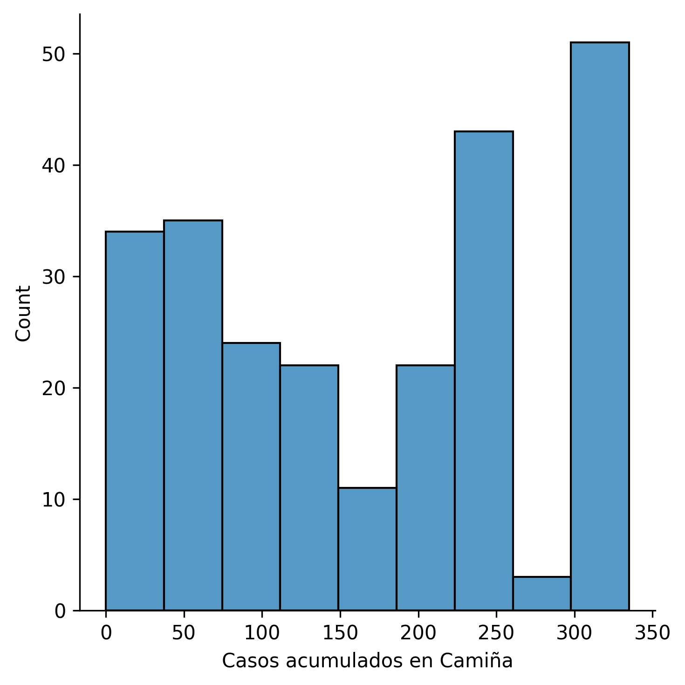
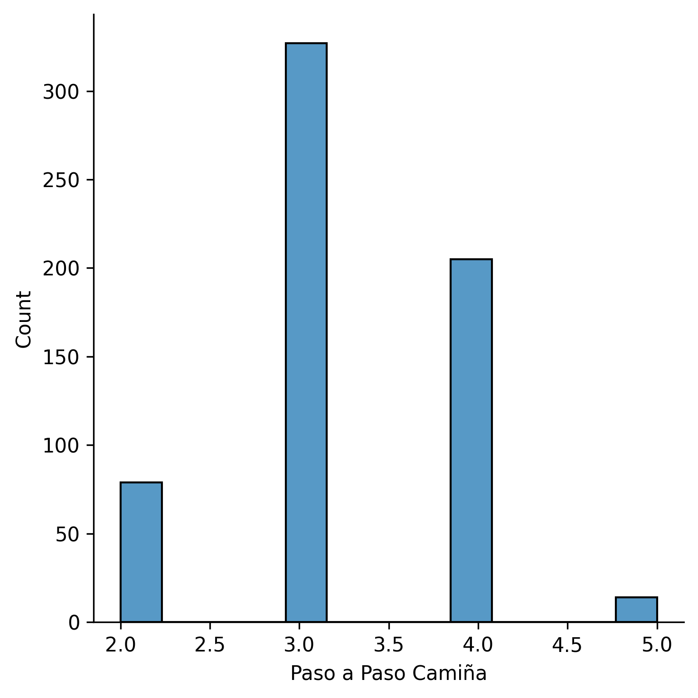
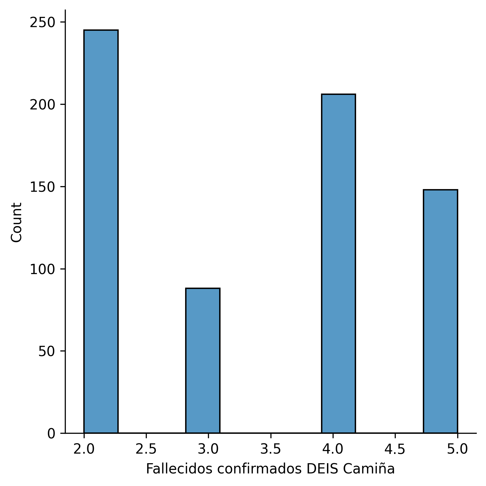
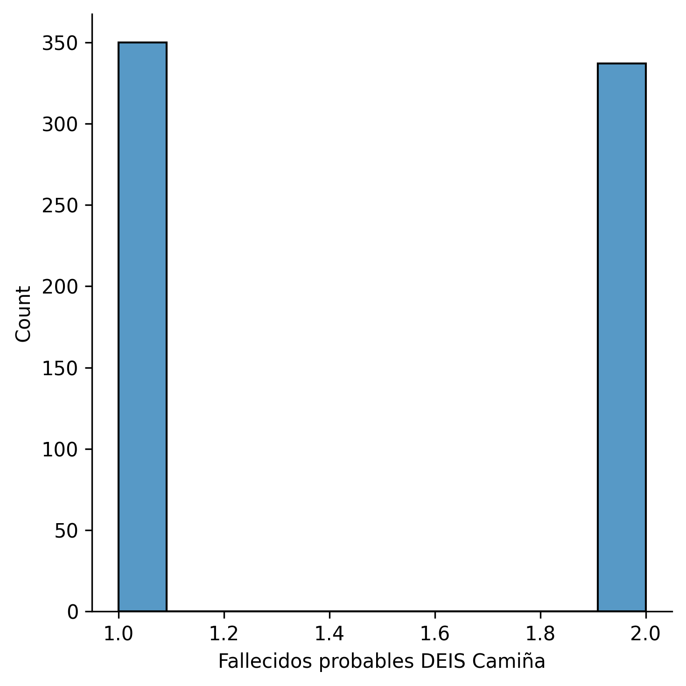
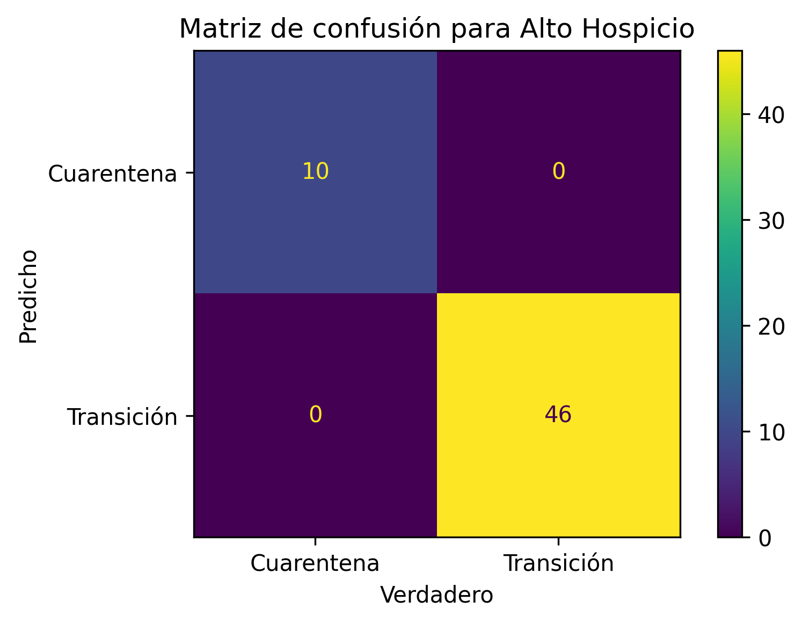
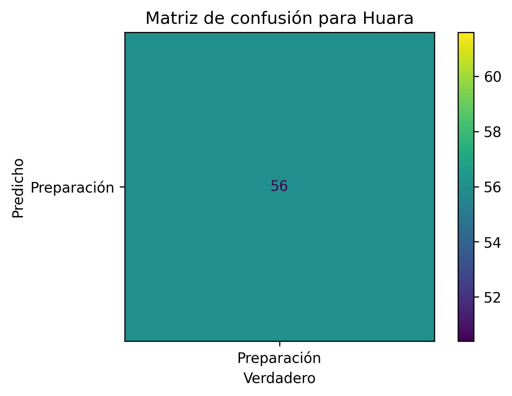
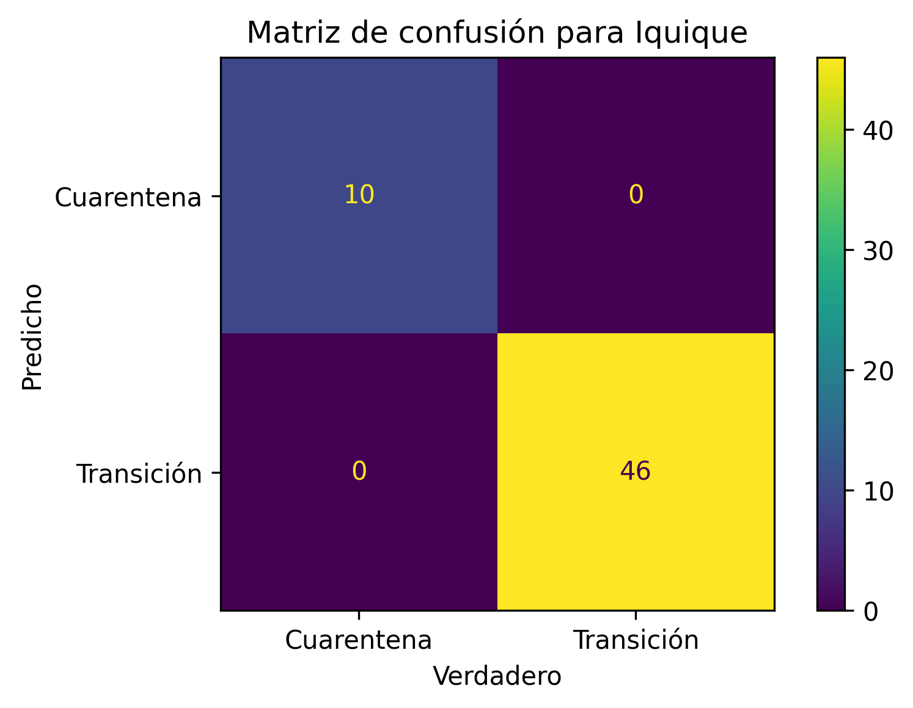
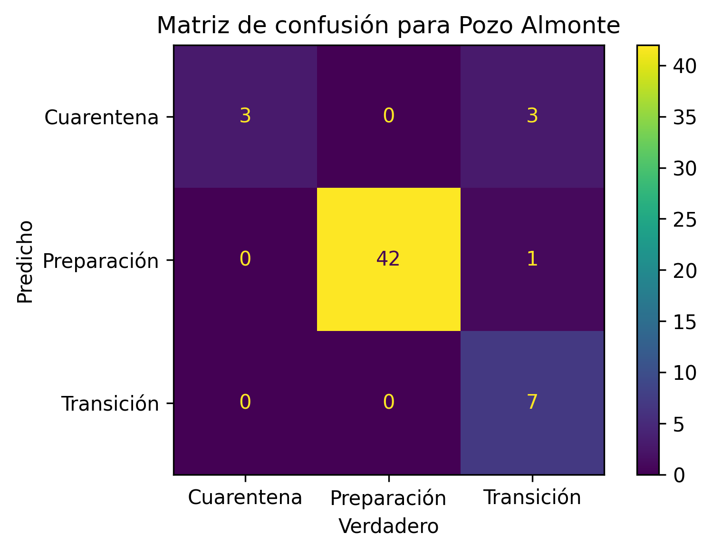

Aprendizaje¶

Fig. 16 Ilustración realizada por Bernardo Dinamarca.¶
¡Hola de nuevo! Este notebook estará basado en la aplicación de un modelo de Machine Learning a intentar predecir el plan Paso a Paso por las comunas de la Región de Tarapacá.
Conceptos previos¶
Para este inciso, nos basaremos en el trabajo de Sergio Montoro 1.
Percepción¶
Según [Mon15], “La percepción es la organización, identificación e interpretación de información sensorial con el propósito de representar y entender el entorno”.

Fig. 17 Fuente: Facebook. Learning to Segment.¶
En Facebook Research 2, se realizan la pregunta: “Can a computer distinguish between the many objects in a photograph as effortlessly as the human eye?” [Dol16], que en Español, significa “¿Puede un computador distinguir, entre los muchos objetos de una fotografía, sin esfuerzo, tal como el ojo humano?”. Esa pregunta es capaz de responderla el Machine Learning (Aprendizaje Automático), en concreto, desde el Computer Vision (Visión por Computador).
Tal como en la figura, el reconocimiento de imágenes, y visto de forma muy general, es que, a partir de un conjunto de píxeles, se clasifica en tipos de objetos (lo que se determina como una clase). Ésto es, lo básico que debe realizar un Algoritmo de Clasificación. Éste tipo de algoritmos son parte del Aprendizaje Supervisado.
Así entonces, tenemos algoritmos que, a partir de un conjunto de datos de entrada, como los píxeles de una imagen, es capaz de reconocer los distintos tipos de objetos (clases). Por ejemplo, reconocer el cielo, personas, vehículos, animales, etc. Pero, ¿cómo lo hace? Pues, a través del aprendizaje.
Aprendizaje¶
Imagina lo siguiente. Cuando estudias, ¿qué haces?

Fig. 18 Fotografía de Pexels. Enlace aquí.¶
Pues, te aprendes la teoría, y una vez te sientes preparado, practicas esa teoría en ejercicios a partir de problemas (para cualquier tipo de asignatura). ¿Te equivocas al principio? ¡Sí! ¡Muchas veces! Es necesario equivocarse, dado de esa forma aprendes. ¡Ese mismo proceso realizan los algoritmos! Solo que, de una forma más lógica y menos abstracta en cómo lo realiza el cerebro humano, al menos, desde el conocimiento que tenemos sobre nuestro cerebro hasta ahora… Existe la teoría de que nuestro cerebro tiene un algoritmo perfecto (no es broma).
A partir de allí, se contemplan distintos conceptos, como por ejemplo, el cómo medimos el error en los algoritmos, siendo nuestro objetivo minimizarlo. Y así, surgen y surgen los conceptos en el Machine Learning. Sin embargo, esa es la teoría básica.

En el GIF que adjunté (créditos a Arren Matthew C. Antioquia), se puede apreciar cómo la recta, por cada iteración, se ajusta al conjunto de datos. De esa forma, será capaz de predecir datos futuros. Por ejemplo, puede servir para predecir una relación lineal: Dado una entrada de años de experiencia laboral, ¿cuál es el sueldo que debería corresponder? Entonces, sabemos que, a más experiencia laboral, mayor sueldo, por lo que generamos un algoritmo de regresión lineal con un buen conjunto de datos, los procesamos, hacemos el análisis, entrenamos el modelo, y finalmente, con el modelo ya entrenado, seremos capaces de predecir la respuesta. ¿Genial, no?
Procedimientos similares, pero con mayores dimensiones, se pueden extrapolar para preguntas más complejas, como lo que mencionábamos en torno al cáncer en secciones anteriores: ¿Cómo dado un conjunto de entrada de píxeles (una imagen) somos capaces de predecir que una persona tiene riesgo de tener cáncer? Evidentemente, allí ya no tratamos con datos continuos, sino discretos. La salida deberá ser si el paciente tiene o no tiene cáncer, por lo que bajo cierto umbral de la predicción, se podrá tener certeza del resultado. Asimismo, se trataría de un problema de clasificación.
¡Son múltiples las opciones! De esta forma, ¡creamos Inteligencia Artificial! Imitamos el funcionamiento de nuestro cerebro… Pero, ¿cómo lo imitamos? Con funciones matemáticas (sí, esas que viste en el colegio, pero con mayor complejidad). Además, nos apoyamos en el Cálculo, Estadística y Ciencias de la Computación.
Dicho ésto, ¡proseguimos a la siguiente sección! Por cierto, si quieres arrancar, es el momento.
Imitación (aprendizaje)¶
Entonces, ya lo sabemos. La imitación surge a partir de una función matemática. Esta función, se explicará desde el punto de vista del aprendizaje (según el contexto que nos ocupa). En este sentido, [Mon15] declara “El aprendizaje es el hallazgo de una función \(h(x)\) —llamada frecuentemente hipótesis— que dado un vector de entrada \(x\) proporcione una estimación lo bastante buena de otra cantidad relacionada con \(x\)”.
Para comprender el punto anterior, ¿recuerdas nuestra relación lineal en torno a los años de experiencia laboral y el salario? Definamos:
Donde \(h_{x}\) representa nuestra hipótesis. Esta hipótesis recibirá una entrada \(X\) (años de experiencia laboral) a la cual se le asignará cierto peso (o nivel de relevancia), y deberá predecir, con cierto error (idealmente mínimo), la salida \(Y\) (salario).
Evidentemente, tendremos que alimentar este modelo con datos (de otra forma, no podríamos hacer absolutamente nada). De esta forma, contamos con los datos de entrada \(X\), y sus respectivas salidas \(Y\). Entonces, nuestra hipótesis debe ser capaz de predecir, aproximadamente, y para cada \(X_{i}\), el salario \(Y_{i}\). En otras palabras, es lo que llamamos Aprendizaje Supervisado, puesto que, el modelo se ve constantemente supervisado por los datos reales. ¿Cómo? El contraste se realiza entre la salida real y la salida hipotética, donde, aproximadamente, \(Y_{real} = Y_{hipotetica}\) (falta el tilde, sin embargo, este entorno de LATEX no permite acentuar).
Entonces, supongamos nuestra función \(h_{x}\) no es capaz de predecir de forma correcta, a partir de los años de experiencia laboral \(X\), el salario \(Y\) que debería recibir una persona.
¡Nuestro modelo se está equivocando! ¿Cómo medimos ese error? Para ello, introducimos un nuevo concepto, la función de costo (recuerda el contraste que mencionamos), que en estricto rigor, nos cuantifica el error que tiene la hipótesis en torno a la salida real.
Un ejemplo de una función de costo podría ser el error cuadrático medio (por cierto, tengo un Notebook basado, exclusivamente, en este tema, por si lo deseas profundizar). Con ella, y hablando de forma macro, estamos utilizando la Estadística.
Ahora bien, consideremos que nuestro modelo, inicia su entrenamiento desde una asignación aleatoria de pesos. Por el azar, el modelo se equivoca, y debe enmendar ese error. ¡Para ello utilizamos la función de costo! Con ella, seremos capaces de minimizar el error. ¿Cómo? Recurrimos al Cálculo, en concreto, a la derivada. ¿Espera? ¿Por qué la derivada? La derivada mide el cambio, ¿no es así? Y si nuestro modelo se está equivocando por la asignación aleatoria de pesos, ¿no deberíamos regularlos? Efectivamente. Los pesos son como una consola de sonido, donde puedes subir o bajar los niveles, sintetizar, etc. Por lo que, sencillamente, cambiamos el peso del parámetro. Lo contrastamos con la función de costo, y nos preguntamos, ¿Disminuyó el error? Si es así, dirección es correcta, de otra forma, debemos tomar la dirección contraria. Suponiendo que, tenemos la dirección correcta, debemos seguir modificando el peso del parámetro en esa dirección, y contrastando con la derivada de la función de costo, hasta que el error se minimice. Ésto es lo que se conoce como descenso del gradiente, pero, aún nos falta un análisis más.
El proceso anterior, ¿te lo imaginas realizado de forma manual? Digamos, ¿realizar mil o millones de iteraciones? Imposible. Sería ineficiente. Incluso, ¡repetir el mismo proceso cien, doscientas o trescientas veces de por sí es tedioso! Aquí es donde entran las Ciencias de la Computación y su alta capacidad de realizar múltiples cálculos por segundo. Con ella, podremos iterar, hasta llegar a la minimización del error.
¿Ves el por qué del uso de los tres grandes campos de la Ciencia de Datos? Ahora bien, el proceso anterior es una forma. ¡Sin embargo! El mismo problema, ¡se puede resolver igualando la derivada a cero! Aunque, si la dimensionalidad del problema es alta, será un cálculo complejo, y que por ende, puede llevar un alto costo de procesamiento computacional.
A partir de ese resumen, nacen muchos de los conceptos del Machine Learning.
Importando paquetes¶
Introducidos los conceptos previos, llega el momento de trabajar con un poco de código y algoritmos. No quise entrar en detalle matemático con respecto a los conceptos previos, puesto que se alargaría mucho el Notebook.
Por cierto, además de las librerías del notebook anterior, deberemos trabajar con otras, de las que, hasta el momento, no tengo experiencia. Sin embargo, sí conozco los conceptos fundamentales detrás de la regresión lineal, logística, la estimación del error (función de costos), descenso del gradiente, entre otros.
La librería que me interesa destacar es Scikit-learn:
Scikit-learn. Librería de Machine Learning que nos permitirá implementar algoritmos de Machine Learning sin necesidad de escribirlos desde cero (lo que es un ahorro de dolor de cabeza, a ser sincero).
Fig. 20 Logo de la librería Scikit-learn.¶
# Importando paquetes
### Librería de machine learning
import sklearn
## Para ver % de error del modelo
from sklearn.metrics import confusion_matrix, plot_confusion_matrix, classification_report
## Para separar conjunto de entrenamiento y de prueba
from sklearn.model_selection import TimeSeriesSplit
## Para modelo de aproximación por kernel
from sklearn.svm import SVC
from sklearn.pipeline import make_pipeline
from sklearn.preprocessing import StandardScaler
### Librería de manipulación de datos
import pandas as pd
pd.set_option('display.max_columns', 50)
pd.options.display.float_format = '{:,.2f}'.format
### Librería de álgebra
import numpy as np
### Librerías para graficar
import matplotlib.pyplot as plt
import matplotlib.image as mpimg
import matplotlib as mpl
import seaborn as sns
### Customizamos para tener fondos transparentes con alta resolución
mpl.rcParams['figure.dpi']= 300
mpl.rc("savefig", dpi=300)
### Para formato local
import locale
### Según Windows o Ubuntu
try:
### Windows
locale.setlocale(locale.LC_ALL, 'esp')
except Exception:
### Ubuntu (action)
locale.setlocale(locale.LC_ALL, 'es_CL.UTF-8')
### Otros paquetes
import math
import os
import json as json
import datetime
import time
from IPython.display import display, Markdown, Javascript
from scipy import stats
### Gracias a joelostblom (https://gitlab.com/joelostblom/session_info)
import session_info
### Librería BeautifulSoup para manipular HTML (más detalle en el siguiente Notebook)
from bs4 import BeautifulSoup
Importando datos¶
Del notebook anterior, logramos procesar la información recopilada a partir del Ministerio de Ciencia, Tecnología, Conocimiento e Innovación.
A continuación, lo que haremos será cargar esa información en el ambiente local del notebook con Pandas.
## Cargamos el .csv (convertimos la columna 'Fecha' a objeto datetime y lo pasamos al índice)
df = pd.read_csv('../../out/site/csv/numeralab.csv', parse_dates=['Fecha'], index_col=['Fecha'])
Problema y Machine Learning¶
El Machine Learning (abreviado ML, o Aprendizaje Automático en español) es la vía mediante la cual las computadoras aprenden de forma automática a través de observaciones (datos) dado un número de características (variables).
En este sentido, la computadora aprende de los datos y eventualmente, construye un sistema o algoritmo capaz de predecir, con un cierto error, un determinado suceso, siendo el error el valor a minimizar, de forma constante, en el desarrollo del algoritmo. Éste fin se debe conseguir a partir de la secuencia lógica de actores:
Una persona detrás, utilizando Estadística con apoyo en las Ciencias de la Computación (utilizando distintos Software para estos fines). Es a partir del trabajo conjunto de estas áreas de estudio, el como se desarrolla el análisis exploratorio de los datos de interés, corroborando formatos, falencias, etc.
A partir del análisis exploratorio previamente realizado, se desarrolla un algoritmo a partir del cual se obtiene una solución hipotética: Esta solución hipotética deberá ser contrastada con la solución real, obteniendo el error. De esta forma, las acciones automáticas como la iteración (gracias a la rapidez de los cálculos de los computadores modernos) permiten la minimización de dicho error, y a partir de ello, se desarrollan algoritmos altamente dependientes de la teoría de las ramas de la Estadística y Ciencias de la Computación, como las funciones de costo, el error cuadrático medio, o el descenso del gradiente, entre otros.
Respecto a la persona detrás (yo), podré jugar con estas herramientas. Si bien no soy un experto en ML, tengo cierto conocimiento - que creo apropiado - para desarrollar el presente notebook. Nada se consigue sin equivocar, el error es natural.
Con la introducción anterior, podemos ahondar con detalle en otros aspectos.
El problema¶
En el ML existen diversas formas de predecir distintas salidas, las que pueden ser continuas, discretas o categóricas (aquí un enlace de minitab acerca del tipo de variables en Estadística).
En este caso particular, estamos tratando de predecir variables categóricas, por lo que se trata de un problema de clasificación. Respecto al plan Paso a Paso, se definen distintas etapas de confinamiento (en orden de menor a mayor libertades):
Cuarentena (fase 1)
Transición (fase 2)
Preparación (fase 3)
Apertura Inicial (fase 4)
Apertura Avanzada (fase 5)
De esta forma, deberemos categorizar un determinado conjunto de observaciones de un día, y predecir si dicho día, de acuerdo a valores epidemiológicos o temporales, una determinada comuna debería encontrarse en alguna de las etapas de confinamiento del plan Paso a Paso:
Valores epidemiológicos como número de contagios, testeo, etc.
Valores temporales (tiempo en confinamiento por comuna de acuerdo a límites del plan Paso a Paso)
Así entonces, se categorizará por alguna de las fases del plan Paso a Paso. ¡Sin embargo! De acuerdo al plan 3, una comuna deberá permanecer, mínimamente, dos semanas en una determinada fase [dSdC21] (al menos, es lo que está especificado para la fase 1, en la edición del plan del 29 de abril de 2021 | Pg. 4). Respecto a la fase 1 (Cuarentena), se menciona:
“Tendrá una duración acotada: máximo 4 semanas. A la semana 2 se evaluará si se avanza o no, y si sigue en Cuarentena se evaluará el avance semana a semana.”
Asimismo, respecto a la fase 2 (Transición), se menciona:
“Duración mínima de dos semanas, con el objetivo de que una comuna no vuelva inmediatamente a Cuarentena.”
Éstos anunciados son, propiamente tal, restricciones, las cuales deberíamos considerar en el modelo a desarrollar. El inconveniente es que, como tal, Scikit-learn no permite añadir restricciones, y en cierta manera, es innecesario de hacer. De por sí, el algoritmo debería aprender de los datos.
Por otro lado, el Ministerio de Salud se ha mostrado flexible en torno a estas medidas en razón de las condiciones epidemiológicas, las que en caso de ser críticas, y suponiendo, una comuna en cuarentena, no implicará, en definitiva, un avance a transición por el único hecho de cumplir un mes en confinamiento. Situación similar fue lo que sucedió en las comunas de Iquique y Alto Hospicio, donde ambas, estuvieron 58 días en confinamiento (desde el 20 de marzo de 2021 al 16 de marzo del mismo año). Ésto se puede apreciar en las columnas de la base de datos, Paso a Paso Iquique y Paso a Paso Alto Hospicio.
En este caso, el algoritmo debería contemplar estas restricciones en la función objetivo, a partir de los pesos de los parámetros.
Seleccionando el modelo¶
Visto lo que es la regresión logística, y en concreto, lo que son los problemas de clasificación, ya sabemos con lo que estamos lidiando. El inconveniente es el siguiente: Sé mucho sobre la teoría y poco de la práctica. Por ello, deberemos utilizar una planilla de Scikit-learn. ¡Sin embargo! Recordemos que tratamos con un problema de clasificación.

Metodología¶
Con la imagen, seguiremos el trayecto, realizando la pregunta y la corrobaremos.
El camino¶
Tenemos los algoritmos de clasificación en la sección superior izquierda. Sin embargo, comencemos desde el “START” o inicio.
¿Tenemos menos de 50 observaciones o datos?
display(Markdown('Contamos con **{}** filas de observaciones o datos.'.format(len(df))))
Contamos con 484 filas de observaciones o datos.
¿Tenemos que predecir una categoría?
¡Sí! En concreto, si una comuna debe estar en Cuarentena, Transición, Preparación, Apertura Inicial o Apertura Avanzada.
¿Tienes datos etiquetados?
Aún no, pero fácilmente los podremos etiquetar más adelante, por lo que la respuesta final es sí.
¿Tienes menos de cien mil observaciones o datos?
Sí. Contamos con 463 observaciones.
Utiliza el clasificador SVC, y en caso de no funcionar, ¿tienes información de texto?
No. Tenemos la salida categorizada, pero nuestra entrada se basa en datos numéricos.
Utiliza el clasificador por vecindad (supongo el nombre es similar). Si no funciona, utiliza SVC o clasificador de ensamblaje.
No tan pronto (statistics intensifies)¶
La planilla que obtuvimos de Scikit-learn (crédito a Andreas Müller y el equipo de Scikit-learn) nos indica que deberíamos utilizar un modelo lineal SVC.
Vale. ¡Tenemos una idea! Pero… ¿Cómo llegamos a este resultado? ¿Qué es lo que se oculta?
Todo tiene que tener un sentido, y no podemos realizar las cosas sin saber el fundamento teórico. Es algo mínimo que toda persona apasionada debería hacer. Por ello, profundizaremos.
El fundamento teórico estará basado en distintos autores que recopilaron o aplicaron modelos basados en KDE y SVC.
¿Por qué partir por el KDE?¶
Encontré que, la aproximación por Kernel, es un algoritmo denso. De esta forma, consideré que, si era capaz de dar a entender, a partir de la bibliografía, cómo funciona el algoritmo KDE (al menos, visto de una forma macro), lograría entonces explicar el SVC.
Dicho ésto, ¡comenzamos!
Inferencia estadística¶
Según Economipedia, la inferencia estadística 4, es el conjunto de métodos que permiten inducir, a través de una muestra estadística, el comportamiento de una determinada población. La inferencia estadística, estudia entonces cómo, a través de la aplicación de dichos métodos sobre los datos de una muestra, se pueden extraer conclusiones sobre los parámetros de la población de datos. De la misma manera estudia también el grado de fiabilidad de los resultados extraídos del estudio [Lop].
Con respecto a la definición, la inferencia estadística utiliza dos métodos posibles de acuerdo a ciertos criterios que tienen relación con la certeza, cantidad de datos, etc. que son la estadística paramétrica y la no paramétrica.
En palabras simples, la estadística paramétrica asume que la distribución de los datos es conocida, lo que refiere a que, los estadísticos (media, mediana, etc.) describen correctamente los datos.
Nuestra labor es reconocer si nos es útil la estadística parámetrica o no paramétrica en este caso puntual.
Cabe recalcar que, tanto la estadística paramétrica como no paramétrica son complementarias. De hecho, la utilización de la no paramétrica depara, eventualmente, en métodos de la estadística paramétrica.
Hipótesis no estadística¶
La pregunta es, ¿conocemos la distribución de los datos? La respuesta es, posiblemente, no. La pandemia se caracteriza por cifras que, lejos de ser regulares, dependen de múltiples factores y tienden a la variabilidad. Por dicha razón, la distribución se ve afectada, constantemente, por los confinamientos, por la movilidad, por el muestreo, entre otros.
Ahora bien, lo anterior es, netamente, una hipótesis. Debemos corroborarla, y para ello, simplificaremos un poco nuestro trabajo. Nos basaremos en “El blog de Minitab” 5, en específico, “¿Cómo elegir entre una prueba no paramétrica y una prueba paramétrica?”. En estricto rigor, la elección del tipo de prueba estadística (metodología para evaluar la evidencia que proporcionan los datos, probando una hipótesis), nos brindará si deberemos utilizar un método paramétrico o no paramétrico. Notar que, justamente, los clasificadores SGD y KDE, tal como la regresión logística y el estimador SVC son clasificadores no paramétricos.
En [Edi19], se expone que, una de las razones para utilizar las pruebas no paramétricas refiere a “el área de estudio se representa mejor con la mediana”. Según el editor del blog, aclara “Por ejemplo, el centro de una distribución asimétrica, como los ingresos, puede medirse mejor con la mediana, donde el 50% está por encima de la mediana y el 50% está por debajo. Si usted agrega varios multimillonarios a una muestra, la media matemática aumenta enormemente aunque el ingreso de la persona típica no cambia. Cuando la distribución es lo suficientemente asimétrica, la media se ve afectada fuertemente por cambios que ocurren lejos, en la cola de la distribución, mientras que la mediana sigue reflejando con mayor precisión el centro de la distribución. Para estas dos distribuciones, una muestra aleatoria de 100 proveniente de cada distribución produce medias que son significativamente diferentes, pero medianas que no son significativamente diferentes”.
Considerando el punto anterior, le daremos un vistazo a la distribución de los datos y su asimetría. Buscaremos todas aquellas columnas de datos que, como máximo, tengan una curtosis igual a 0.05 como valor absoluto (aproximadamente normal). También podríamos utilizar \( media = mediana \) como en toda distribución normal, pero para ser un poco flexibles, utilizamos una leve aproximación a una distribución normal.
for column in df.skew()[abs(df.skew()) < 0.05][df.skew() != 0].index:
display(Markdown(' <h3> Para la columna {} </h3>'.format(column)))
sns.displot(df['{}'.format(column)], kind='hist')
display(Markdown('> El valor de la curtosis es de **{}**'.format(
df["{}".format(column)].skew())))
plt.show()
Para la columna Antigenos informados acumulados
El valor de la curtosis es de 0.04572182480337589
Para la columna Numero de residencias
El valor de la curtosis es de -0.04329768311950426

Para la columna Vacunados acumulados 1° dosis
El valor de la curtosis es de 0.03758352307220687
Para la columna Casos acumulados en Pica
El valor de la curtosis es de 0.025589718370190535
Para la columna Movilidad Alto Hospicio
El valor de la curtosis es de 0.02350059892232712
Prácticamente, no existe normalidad, y las pocas columnas que son, aproximadamente normales, se deben a datos de comunas con baja población, o que contienen bajo número de observaciones (a raíz de ser añadidas hace poco tiempo al repositorio del Min. Ciencia). Estas columnas las descartamos al asignar que la curtosis sea distinta de cero.
Antes de introducir el funcionamiento de la Aproximación por Kernel, indagaremos, de forma breve, el funcionamento de los modelos de Machine Learning (basándonos en la bibliografía recopilada para el funcionamiento del clasificador KDE).
Máquinas¶
Para estas dos próximas secciones, nos basaramos en dos fuentes, en la primera parte de S. Van Vaerenbergh, I. Santamaría 6, “Métodos Kernel para clasificación” y en la de Joaquín Amat Rodrigo, “Ajuste de distribuciones con kernel density estimation y Python”. Sin embargo, complementaremos ambas fuentes con algunas analogías y ejemplos explicativos realizados al mejor de mis posibilidades.
Cabe recalcar que, referente a la estadística paramétrica y no paramétrica, el clasificador KDE se sustenta en la estadística no paramétrica (considerando las suposiciones que ello implica).
La academia¶
Recuerdo, cuando estudiaba Teoría de Sistemas, revisaba la Antigua Grecia, y en concreto, el cómo se fundó la Academia, y el cómo el conocimiento de los filósofos se limitó a unos pocos, conllevando a que, personas que escuchaban los diálogos en público, perdieran esa oportunidad de acceder, levemente, al conocimiento. En ese sentido, siempre me ha gustado rebajar los tecnicismos para que sea comprendido por todos y todas. El no rebajar el contenido es una gran falencia en el mundo de las exposiciones modernas.
Por lo anterior, son enormes las contribuciones de S. Van Vaerenbergh, I. Santamaría y Joaquín Amat Rodrigo. Les agradezco, ya que sin Uds. me sería imposible lograr comprensión en estos campos profundos.
¿Qué son los clasificadores? ¿Cómo se entrenan?¶
Un clasificador es, básicamente, un algoritmo capaz de, a partir de un conjunto de entrada, generar una salida etiquetada o clasificada (que ya es conocida).
En nuestro caso, sabemos que las comunas deben estar en Cuarentena, Transición, …, etc. por lo que, lo que realizaremos, será, desarrollar un clasificador o algoritmo capaz de, a partir de las variables de entrada (que por ejemplo, pueden ser los casos acumulados o activos por comuna), clasificar en variables discretas categóricas. ¿Por qué variables discretas? Porque nuestro conjunto de salida debe ser finito, ya que tenemos solo cinco posibles salidas que son las fases del Paso a Paso.

Fig. 22 Aprender. Fotografía de Monstera en Pexels.¶
Respecto al entrenamiento, y visto de una forma muy básica, ¿cómo aprendes cosas? Estudiando, practicando, escuchando, etc. dependiendo de la forma en que te sea cómoda aprender, ¿no es así? Elegida la forma cómoda, repites hasta eventualmente aprender. Si te equivocas, vuelves a repetir la forma cómoda, ¡hasta que luego no te equivocas! A partir del error, y la iteración (repetición) de tu forma cómoda, aprendes.
Nuevamente, obviamos todo el proceso complejo que realiza el cerebro, y solo nos centramos en esa forma básica de aprendizaje. Ese aprendizaje es el que realizan los algoritmos al simular una lógica a través de la matemática.
Explicados brevemente los conceptos anteriores, seguimos con la siguiente sección.
¿Qué es el aprendizaje estadístico?¶
Supongamos tres clasificadores entrenados sobre el conjunto de entrenamiento de la figura.

Fig. 23 Límite de decisión. Elaboración propia (perdón lo cutre).¶
¿Qué clasificador funcionará mejor sobre el conjunto de prueba? ¡Espera! Algo se me olvidaba. En la imagen, puedes apreciar dos figuras, ¿no es así? Pues, en el caso de las circunferencias azules pueden significar, supongamos, fotografías de perros, y en el caso de las cruces rojas, pueden referirse a fotografías de gatos.

Fig. 24 Un perro y un gato. Fotografía de Sharon McCutcheon en Pexels.¶
Supongamos nosotros deseamos entrenar un algoritmo capaz de diferenciar entre imágenes de perros y gatos. En este caso, el límite de decisión verde, lo que realiza es separar ambos conjuntos de perros y gatos, y dependiendo de qué variable de entrada le brindes, te la clasificará de acuerdo al clasificador.
Si le pasas una imagen borrosa de un gato, a un algoritmo entrenado con un conjunto mediano de imágenes nítidas y borrosas de perros y gatos:
Te clasificará un gato si está bien entrenado (appropiate-fitting, o bien ajustado a los datos).
Si le pasas una imagen borrosa de un gato, a un algoritmo entrenado con un conjunto pequeño de imágenes borrosas de perros y gatos:
Te podrá clasificar un perro si no está bien entrenado (under-fitting, o con un mal ajuste a los datos).
Si le pasas una imagen borrosa de un gato, a un algoritmo entrenado con un conjunto muy grande de imágenes nítidas de perros y gatos:
Te podrá clasificar un perro si intenta, en exceso, ajustarse a los datos (over-fitting, o un sobreajuste a los datos).
¿Por qué te podría brindar un perro? Pues, en base a las dos situaciones anteriores en que brindaba un perro:
En la segunda situación, el under-fitting se caracteriza por un límite de decisión, o un clasificador, que no se ajusta a los datos, o dicho de otra forma, tiene un amplio sesgo.
En la tercera situación, el over-fitting se caracteriza por un clasificador que se sobreajusta a los datos, o dicho de otro modo, intenta, de sobremanera, ajustarse a la entrada que le brindes. Ésto implica que, al pasarle una imagen borrosa de un gato, puede pensar que es un perro, ya que, al ser borrosa, el algoritmo no estará entrenado para clasificar imágenes borrosas. ¿Por qué? El clasificador se especializó en aprender a partir de imágenes nítidas, y el único hecho que le brindes una imagen borrosa implicará que no sabrá cómo actuar ante esa entrada.

Fig. 25 Clasificación a través de una red neuronal. GIF de purnasai gudikandula en Medium.¶
Recomiendo el siguiente vídeo del divulgador de Inteligencia Artificial, DOT.CSV:
A modo de resumen del vídeo [Veg19], se entiende que:

Fig. 26 Un estudiante copiando. Fotografía de RODNAE Productions en Pexels.¶
El under-fitting (ajuste bajo, o un algoritmo que no explica los datos) es áquel estudiante que no estudia, y no logra buenas calificaciones. ¿Por qué? Posiblemente, por falta de entrenamiento, falta de material de estudio, etc.
El appropiate-fitting (buen ajuste, o un algoritmo que explica los datos) es áquel estudiante que estudia, y que logra buenas calificaciones sin, necesariamente, lograr la nota máxima. ¿Por qué? No memorizó el material de estudio, tampoco le faltó material de estudio. Sencillamente, estudio para aprender, no para la evaluación.
El over-fitting (excesivo ajuste, o un algoritmo que intenta, de sobre manera, explicar los datos) es áquel estudiante que estudia memorizando el contenido, logrando excelentes calificaciones. ¿Por qué? Memoriza el material de estudio, tiene demasiado material de estudio, pero que únicamente entrará en la evaluación. Es decir, estudia solo los contenidos para la evaluación, y por ende, si en la prueba se añade un problema de aplicación, distinto a lo que estudió, no sabrá responder correctamente, porque solo estudió un determinado tipo de problemas.
¿Quién de estos estudiantes es el más propicio para desarrollar un problema? Es evidente. Esa es la mejor explicación que he escuchado y visto en base al aprendizaje de los algoritmos. Enorme el aporte de Carlos Santana Vega 7. Recomiendo, plentamente, su canal para los apasionados sobre IA y ML.
¡Sigamos! Nuevamente, ¿qué clasificador funcionará sobre el conjunto de prueba? Puedes realizar una analogía con el ejemplo anterior.
Es evidente que, existe un compromiso entre:
Error en el entrenamiento o error de generalización.
Sesgo o varianza del modelo entrenado.
¿Qué hace el aprendizaje estadístico? Según [SVV18], el aprendizaje estadístico formaliza estas ideas, caracterizando propiedades matemáticas de las máquinas de aprendizaje.
En relación a una “máquina de aprendizaje”, hace referencia a modelos de predicción, que nuevamente, son algoritmos o clasificadores.
Antes de avanzar hacia la comprensión del modelo KDE, introduciremos, brevemente, la regresión logística.
Regresión logística¶
Introduciré, brevemente, el concepto de regresión logística. Te recomiendo los notebooks que he recopilado sobre:
O bien, puedes encontrar otros en el siguiente enlace. Es sumamente relevante tener ese conocimiento previo para comprender lo que realizaremos a continuación.

Fig. 27 Para la fuente, visitar el notebook que realicé. Enlace aquí.¶
Lo que sucede aquí es lo siguiente. ¡Debemos clasificar! Para ello, introduciré una idea de un algoritmo de clasificación.
¿Son valores discretos? Sí. ¿Por qué? No tenemos una infinidad de valores como predecir, por ejemplo, el precio de una casa, que puede ser un valor desde \(\$ 10.000 \), \(\$ 10.500 \), \(\$ 14.403 \) o \(\$ 15.600,50 \) si calculamos en dólares. ¡Tenemos infinitas posibilidades! En cambio, aquí solo tenemos las etapas del plan Paso a Paso, las que definiremos:
Fase 1 (Cuarentena), como 1.
Fase 2 (Transición), como 2.
Fase 3 (Preparación), como 3.
Fase 4 (Apertura Inicial), como 4.
Fase 5 (Apertura Avanzada), como 5.
Es decir, para una determinada comuna, tendremos una salida que puede ser solo un valor del siguiente vector:
\( \Large [1, 2, 3, 4, 5]\)
Así entonces, la regresión logística nos brindará la probabilidad de que una determinada comuna esté en alguna de las cinco fases. ¿Cuál es la fórmula de la regresión logística? Se constituye a partir de la regresión lineal, y de hecho, la involucra.
Siendo \( h_ \theta (X) = g( \theta ^{T}X) \), definimos \( Z = \theta ^{T}X \), de forma que, \( h_ \theta (X) = g(Z) \).
Lo que representa \( h_ \theta (X) \) es la regresión lineal, mientras \( g( \theta ^{T}X) \) representa la regresión logística. Es similar a lo que decíamos antes, que la salida de X puede ser la entrada de Y (lo que es una composición de funciones).
Ahora, ¿cómo representamos al regresión logística? La definimos:
\( \Large h_ \theta (X) = g(Z) \), donde \( \Large g(Z) = \frac{1}{1+e^{-z}} \) y \( \Large Z = \theta ^{T}X \), por tanto,
\( \Large g( \theta ^{T}X) = \frac{1}{1+e^{- \theta ^{T}X}} \)
Gráfica¶
La gráfica de la sigmoide y su derivada:
sigm = (lambda x: 1 / (1 + np.e ** (-x)),
### Derivada de la función sigmoide
lambda x: x*(1 - x))
### Variable generada de forma lineal, que va de -5 a 5 con 100 valores
_x = np.linspace(-4, 4, 100)
### Ahora si deseamos acceder a la derivada de la función sigmoide
fig, ax = plt.subplots()
ax.plot(_x, sigm[0](_x), color='red')
ax.set_ylabel('sigmoide', color='red')
ax2 = ax.twinx()
ax2.plot(_x, sigm[1](_x), color='#1f77b4')
ax2.set_ylabel('derivada de la sigmoide', color='#1f77b4')
plt.show()
Donde:
La regresión logística tendrá una salida tal que \( 0 < \ h_\theta (X) \leq 1 \) (representa la probabilidad de que la salida, Y, es \(Y = 0\) o \(Y = 1\), o que es una clase 0 u otra clase 1).
\( \theta ^{T}X \): Suma ponderada de características. ¿Qué representa \( \theta \)? Representa las ponderaciones de cada una de las características \(X\) de acuerdo a su importancia en el modelo.
La función sigmoidea tiene dos asíntotas. Mientras \( Z \) va hacia menos infinito, \( g(Z) \) se aproxima a cero y mientras \( g(Z) \) tiende a infinito \( Z \) se aproxima a uno. Es decir, \( g(Z) \) ofrece valores que están entre 0 y 1 pero también tenemos que \( h_ \theta (X) \) debe estar entre 0 y 1.
Lo que debemos hacer es ajustar los parámetros \( \theta \) a nuestros datos. Así que dado un conjunto de entrenamiento, necesitamos elegir un valor para los parámetros \( \theta \) y esta hipótesis nos permitirá hacer predicciones.
La interpretación de la salida de la hipótesis se entiende a partir de \( h_ \theta (X) = probabilidad \), donde la \( probabilidad \) es la prob. estimada que \( y = 1 \) en el ejemplo de entrada de \( X \).
Hay varias cosas que se nos quedan en el tintero, como el límite de decisión, el descenso del gradiente, entre otros. Nuevamente, recomiendo recurrir a los notebooks adjuntos (los que no están exentos de errores). Aunque, nuevamente, explicaremos brevemente estos conceptos en referencia a la regresión logística.
El límite de decisión resumido¶
El límite de decisión es el límite que nos explicará lo que hacen las regresiones logística, y en particular, de lo que son capaces de computar. En resumen, Suponemos \( Y = 1 \) cuando \( 0.5 \leq g(Z) \). Suponemos \( Y = 0 \) cuando \( 0.5 > g(Z) \). El eje aquí es considerar el cómo está contemplado \( \theta_{T}X \), donde está como exponente negativo de una exponencial, por lo que:
Si \( \theta_{T}X \) es negativo, implicará un valor positivo del exponencial, y dado \( \theta_{T}X = Z \), entonces, siempre que \(0 > Z\), \(Y\) tenderá a 0.
Si \( \theta_{T}X \) es positivo, implicará un valor negativo del exponencial, y dado \( \theta_{T}X = Z \), entonces, siempre que \(0 \leq Z\), \(Y\) tenderá a 1.
En consideración con lo anterior, y de acuerdo a los valores que asignemos a los parámetros \(\theta\), podremos obtener los límites de decisión a partir de la inecuación entre \(0 \leq Z\) para el área positiva o \(0 > Z\) para el área negativa [NG11]. Ésto se puede apreciar en una imagen que capturé del curso de Andrew NG en Coursera, de la Universidad de Stanford. 8

Descenso del gradiente resumido¶
Respecto al descenso del gradiente, es el algoritmo mediante el cual se minimiza el error del modelo. Nos cuantificará el error a partir del valor hipotético, que deberá ser contrastado con el valor real. Este error se minimiza a partir del proceso iterativo de reducir, a partir de la convergencia. En otras palabras, que tiende a un límite, que en este caso, es al mínimo error (0), a través de la aplicación del gradiente (concepto de cálculo III).
Por tiempo, los conceptos matemáticos, como también, de programación, quedan fuera del alcance del Notebook. Pero como analogía, es similar al estar en una pendiente o en un cerro, ¿hacia dónde se desciende más prontamente sin caernos estrepitosamente o sin demorarnos demasiado en el transcurso? En esa pregunta formulada, está el gradiente y el parámetro de aprendizaje involucrado, que son conceptos que se pueden revisar en el notebook que dejaré en este enlace.
Lo que quiero que comprendas es la finalidad del descenso del gradiente, que es minimizar el error de nuestro modelo de Machine Learning.

La deuda de Kernel¶
Definido entonces, lo que es el aprendizaje, la regresión logística, y otros conceptos, tenemos un dominio relativo. Sin embargo, la deuda sigue siendo vigente en torno a qué son las aproximaciones por Kernel, de lo cual, y a ser sincero, no manejo.
Me dediqué a buscar, sin éxito, algún texto explicativo, fácil de comprender, acerca de lo que es la aproximación por Kernel, hasta que encontré uno que me pareció muy bueno, y el cual aborda desde la Estadística su introducción. Este texto, fue realizado por Joaquín Amat Rodrigo 9.
Sin más preámbulo, seguiremos en la siguiente sección con Joaquín Amat Rodrigo [Rod21].
Cimientos¶
De acuerdo con [Rod21], “el identificar el tipo de distribución que tiene una variable es un paso fundamental en prácticamente todos los estudios que implican datos, desde los contrastes de hipótesis hasta la creación de modelos por aprendizaje estadístico y machine learning” 9.

Fig. 29 Fotografía de Burak Kepapci en Pexels.¶
“Son muchas las ventajas que tiene disponer de una función que describa aproximadamente los datos. Por ejemplo, se puede calcular la probabilidad (o densidad en el caso de variables aleatorias continuas) de que una observación tome un determinado valor. También es posible simular nuevos valores” 9.
Lo anterior, nos afirma una solución a nuestra problemática. Si deseamos predecir el Paso a Paso, podemos utilizar la ya definida estadística no paramétrica.
“En términos generales, ajustar una distribución consiste en encontrar una función matemática capaz de describir un conjunto de datos. De entre todas las posibles funciones candidatas, lo interesante es encontrar aquella que, con mayor probabilidad, puede haber generado los datos observados.
Una de las aproximaciones más prácticas es utilizar como candidatas distribuciones parámetras, estas son distribuciones conocidas cuyo comportamiento está determinado usando un número finito de parámetros. Por ejemplo, la distribución normal está parametrizada por la media y la desviación típica.
Cuando ninguna de las distribuciones paramétricas disponibles describe correctamente los datos, es necesario recurrir a lo que se conoce como métodos de ajuste no parámetricos, cuyo objetivo es encontrar funciones que describan distribuciones cualesquiera, entendiendo a que no se limitan a distribuciones paramétricas conocidas. Uno de los métodos más empleados es kernel density estimation (KDE)” 9.
Así entonces, están sentadas las bases. Debo declarar que Joaquín Amat Rodrigo resumió y explicó en gloria y majestad lo que intenté exponer en las secciones anteriores.
KDE (kernel density estimation)¶
“En estadística, kernel density estimation (KDE), es un método no paramétrico que permite estimar la función de densidad de probabilidad de una variable aleatoria a partir de un número finito de observaciones (muestra). Fue propuesto por Fix y Hodges (1951) y Rosenblatt (1956).
Dado un valor \(x_{i}\) la función aprendida por el kernel density estimator devuelve la densidad de la distribución en el punto \(x_{i}\). Esta densidad, cuyo valor está acotado al rango \([0, + \infty]\), es una medida relativa de verosimilitud (likelihood). Si la densidad para el punto A es mayor que la de B, significa que la probabilidad de que A pertenezca a la distribución es mayor que la de B. Con frecuencia, para facilitar los cálculos, en lugar de utilizar el valor de densidad se utiliza el su logaritmo, aun así, la interpretación es la misma, cuanto mayor su valor, mayor la evidencia de que la observación pertenece a la distribución” 9.
Es decir, lo que realizaremos con el KDE será estimar la densidad de la distribución (el Paso a Paso por comuna), a partir de los datos de entrada que deberemos seleccionar en la próxima sección. O al menos, esa es la idea parcial hasta el momento.
A fondo¶
Joaquín utiliza los histogramas para entender el cómo funciona un kernel density estimation (KDE), y a partir de su trabajo, explicaremos el cómo funciona el KDE.
Antes, un pequeño repaso en torno a los histogramas.
Los histogramas¶
Los histogramas son una representación gráfica capaz de cuantificar la frecuencia con que se presentan, determinados valores, en una población (conjunto de datos). A fin de comprensión, graficaremos el histograma de los casos nuevos:
sns.displot(df['Casos nuevos'], kind='hist')
plt.show()
Del gráfico, podemos obtener la siguiente información:
Con mayor frecuencia, suele haber un poco menos de y entre, 25 y 50 casos nuevos a nivel regional.
La menor frecuencia se encuentra sobre los 250 casos nuevos a nivel regional.
Podemos apreciar una distribución asimétrica hacia la izquierda (se presenta mayor frecuencia de datos en el sector derecho que en el izquierdo).
Como se observa, no existe una línea temporal, puesto que, lo que se registra es, en un determinado intervalo de casos nuevos, la frecuencia de dicho intervalo en torno al resto de la población. La superficie de la barra es proporcional a la frecuencia, y por eso, a simple vista, podemos apreciar que la barra más alta es aquella en la que se registra la mayor frecuencia.
Gráfico de densidad de Kernel¶
¡Vamos hallando cada vez más referencias!
Según [dat], “Un gráfico de densidad visualiza la distribución de datos en un intervalo o período de tiempo continuo. Este gráfico es una variación de un histograma que usa el suavizado de cerner para trazar valores, permitiendo distribuciones más suaves al suavizar el ruido. Los picos de un gráfico de densidad ayudan a mostrar dónde los valores se concentran en el intervalo”.
Pues, al igual que los histogramas, cuantifican la frecuencia de un determinado intervalo de la población, con la diferencia de presentar un suavizado a partir de promedios ponderados por datos vecinos.
Visualicemos la misma distribución anterior (casos nuevos regionales), esta vez utilizando un gráfico de densidad de Kernel.
sns.displot(df['Casos nuevos'], kind='kde')
plt.show()
Así entonces, tenemos definidos los conceptos para proseguir con la explicación de [Rod21].
Idea intuitiva¶
Según [Rod21], “kernel density estimation (KDE) expande la idea del histograma”, donde, “*cada observación aumenta la densidad de probabilidad en la zona donde se encuentra, pero lo hace de forma que las contribuciones se agrupen creando una curva continua y suave (smooth)”.
Nos basaremos en el código que adjunta [Rod21] en su notebook. Se basa en la sección de “Idea intuitiva”: Para el enlace de referencia, click aquí.
Supongamos un conjunto de observaciones \(X\):
\( \Large [2, 3, 4, 7]\)
Los cuales, se grafican en un plano cartesiano, a través de Matplotlib.
### Conjunto de observaciones X
X = np.array([2, 3, 4, 7])
### Definimos ejes y figura de Matplotlib, con tamaño de 6 de ancho y 3 de alto
fig, ax = plt.subplots(figsize=(6,2))
### Graficamos con formato de coordenada
### (np.full_like es una función de Numpy que devuelve un vector de la misma dimensión de la entrada, en este caso, con 0s) ###
ax.plot(X, np.full_like(X, 0), '|k', markeredgewidth=5)
### Límite de Y
ax.set_ylim(-0.05,1)
### Título
ax.set_title('Posición de las observaciones')
### Ejes
ax.set_xlabel('x')
ax.set_ylabel('')
### Mostramos el gráfico
plt.show()
Luego, “sobre cada observación se centra una distribución normal, con media igual al valor de la observación y desviación típica de 1” según [Rod21].
### Definimos ejes y figura de Matplotlib y graficamos con coordenadas
fig, ax = plt.subplots(figsize=(6,4))
ax.plot(X, np.full_like(X, 0), '|k', markeredgewidth=4)
### Definimos 500 valores continuos a partir del máximo y mínimo del conjunto de observaciones X
Xgrid = np.linspace(min(X) - 1, max(X) + 1, num=500)
### Con Scipy, devolvemos como densidad una distribución de probabilidad, con media del valor x del conjunto de obs. X
### (con axvline centramos una recta paralela a Y en el valor x del conjunto de observaciones X) ###
for x in X:
densidad = stats.norm.pdf(Xgrid, loc=x, scale=1)
ax.axvline(x=x, linestyle='--', color='black')
ax.plot(Xgrid, densidad)
### Ejes y título
ax.set_title('Distribuciones normales (una por cada observación)')
ax.set_xlabel('x')
ax.set_ylabel('Densidad')
plt.show()
“De esta forma se consigue que cada observación contribuya justo en la posición que ocupa pero también, de forma gradual, en las regiones cercanas” según [Rod21].
Respecto a cómo se logra la predicción a partir de estas distribuciones de probabilidad, Joaquín aclara, “si se suman las contribuciones individuales y se dividen por el total de curvas (observaciones), se consigue una curva final que describe la distribución de las observaciones”.
### Definimos ejes y figura de Matplotlib y graficamos con coordenadas
fig, ax = plt.subplots(figsize=(6,4))
ax.plot(X, np.full_like(X, 0), '|k', markeredgewidth=4)
Xgrid = np.linspace(min(X) - 1, max(X) + 1, num=500)
### Código para realizar la suma de las contribuciones individuales, dividido por el total de curvas
suma = np.full_like(Xgrid, 0)
for x in X:
densidad = stats.norm.pdf(Xgrid, loc=x, scale=1)
suma = suma + densidad
ax.axvline(x=x, linestyle='--', color='black')
ax.plot(Xgrid, densidad)
suma = suma / len(X)
ax.plot(Xgrid, suma, color='b')
ax.fill_between(Xgrid, suma, alpha=0.3, color='b');
ax.set_title('Suma de las distribuciones')
ax.set_xlabel('x')
ax.set_ylabel('Densidad')
plt.show()
“Esta idea tan sencilla pero a la vez tan potente es en la que se fundamenta el método kernel density estimation (KDE): aproximar una función de densidad como la suma de funciones (kernel) de cada observación.” según [Rod21].
La clasificación KDE¶
Bien. Hemos explicado el funcionamiento de KDE, pero, el acercamiento de Joaquín Amat, según lo que aprecio, es para la predicción de una variable continua.
Para entender la clasificación del estimador KDE, nos basaremos en el trabajo de Dennis Wittich.
Según [Wit19] el clasificador estima un determinado volumen \(V\) 10 (el volumen, lo entiendo como la distribución de probabilidad). Así entonces, se considera \(V\) es la distribución de una clase \(X\). En nuestro caso, y a modo de ejemplo, puede ser la distribución para cada una de las etapas del Paso a Paso (\(V_{0}\): Cuarentena, \(V_{1}\): Transición, etc.); entonces, según el número de muestras que “caigan” en ese volumen, se determinará la distribución de la clase \(X\):
Si una muestra \(X_{i}\) es cercana a la distribución \(V_{i}\) de la clase \(X\), se clasificará en ella.
Finalmente, de acuerdo a la cercanía, se estimará una probabilidad de que la muestra \(X_{i}\) pertenece a la distribución \(V_{i}\) de la clase \(X\).
Así entonces, tenemos las bases para saber cómo funciona el método a través de la aproximación por Kernel.
Para mayor detalle matemático, el cual se obvia, visitar el trabajo de Joaquín Amat, Dennis Wittich o de S. Van Vaerenbergh, I. Santamaría. Los enlaces se pueden encontrar en la bibliografía.
SVC¶
SVC hace referencia a Support Vector Classification, lo que en español significa Clasificación por Vectores de Soporte. Este tipo de algoritmo se basa en solucionar problemas de clasificación, lo que es separar entre dos o más clases (tal como vimos en los conceptos previos).

Fig. 30 Ilustración extraída del artículo “Support Vector Machine Algorithm for Automatically Identifying Depositional Microfacies Using Well Logs”. El enlace en MDPI.¶
La piedra angular del SVC, son los SVM, que es el acrónimo de Support Vector Machine, lo que significa “Máquinas de Vectores de Soporte”. En concreto, esta familia de algoritmos, y según [Her19], se llaman “máquina” por parte del nombre del Aprendizaje de “Máquinas”, que es otro sinónimo de Aprendizaje Automático (en inglés, “Machine” Learning).
Funcionamiento¶
Antes, al realizar la clasificación (en la regresión logística), intentábamos dar con una función que explicase la distribución de los datos, la cual denominamos hipótesis. Esta función se encargaba de separar, según las fronteras de decisión, dos o más clases de datos.
La definición anterior, es similar para las Máquinas de Vectores de Soporte, con la diferencia que hace uso de hiperplanos para separar dos o más clases.
Un hiperplano se define como la extensión del plano. Es una definición geométrica que no puede ser graficada en su totalidad, dado que, su dimensión, se encuentra en la cuarta o en alguna mayor. Ésto no es graficable en el espacio (o al menos, no por completo), y dado nuestra limitada comprensión de dimensiones superiores a la tercera, solo nos podemos imaginar, levemente, cómo se pueden visualizar los hiperplanos en dimensiones inferiores.
La analogía de la esfera¶
Recuerdo haber leído, en algún artículo, una analogía para comprender cómo funcionan las dimensiones (en los tiempos en los que estudiaba Cálculo III). Para introducirte a este mundo de las matemáticas, del hallar sentido lógico a todas las cosas, intentaré rebajar los tecnicismos, tal como ya lo hemos hecho.
Supone, dos seres vivos, Alejandro y María. Alejandro y María son dos esferas que viven en la tercera dimensión, y son amantes. Por esas casualidades de la vida, Alejandro es vílmente hechizado por una entidad, y se convierte en un ser vivo del plano XY (cartesiano), en la segunda dimensión. Alejandro, desesperado, llama a su enamorada, la cual se encuentra a una distancia mayor que la del diámetro de la esfera. María, lo escucha, y recurre a su llamado, por lo que, se acerca al plano XY en el que vive Alejandro. María, puede observar, sin inconvenientes, a Alejandro, convertido en un plano, y comprende plenamente qué es, dado que ella vive en la tercera dimensión.
{kind=link}
Por otro lado, Alejandro no puede ver a María en su totalidad, dado es una esfera, y solo puede observar las intersecciones de la esfera con el plano, las que a su vez, dividen su hogar, por lo que solo aprecia las circunferencias de María, y no comprende cómo puede observar una parte de María, sin ver a María en su totalidad.
¿Qué aprendimos? Pues, nosotros, somos seres tridimensionales. Como tal, jamás podremos comprender figuras de la cuarta dimensión, o de mayores dimensiones, puesto que, estamos acostumbrados a las leyes que rigen la tercera dimensión. La única idea, que nos podemos hacer de dimensiones mayores, es a partir de la intuición, o bien, ¡reducir la complejidad! Tal es el caso de un hiperplano. Un hiperplano es la extensión del plano en dimensiones mayores a la tercera, y por ende, una forma de entenderlo, es a partir del cuento de María y Alejandro. Justamente, nosotros jamás podríamos visualizar, en totalidad, un hiperplano, pero sí partes de él. Por ello, es común encontrar la definición de que, un hiperplano, en la primera dimensión es un punto que divide la recta 1D, en la segunda dimensión es una recta que divide el plano 2D, en la tercera dimensión es un plano que divide al espacio, ¿y en la cuarta? Pues, hasta ahí llegamos. ¡Tenemos el mismo inconveniente de Alejandro! Aunque quisiéramos comprender qué existe en dimensiones mayores, no podríamos.
Demos cuenta de cómo, análogamente, y al observar figuras de dimensiones mayores en inferiores, se disminuye el nivel de complejidad de la figura al “acomodarse” en la dimensión inferior en la que se está observando. Propiamente tal, Alejandro es una figura de la segunda dimensión, y aprecia a María, una figura de la tercera dimensión, convertida (según él) en una figura de la segunda dimensión, siendo “rebajada” la dimensión de la figura de María (desde el punto de vista de Juan), desde una esfera a una familia de circunferencias según se movilice en el eje Z. De forma similar, sucede con la dimensionalidad de los hiperplanos.
Definición de SVM¶
Bien, nuevamente, contamos con un dominio relativo de lo que sería un hiperplano. Ésto nos facilitará mucho el comprender cómo funcionan las Máquinas de Vectores de Soporte.
“Los vectores de soporte son los puntos que definen el margen máximo de separación del hiperplano que separa las clases. Se llaman vectores, en lugar de puntos, porque estos «puntos» tienen tantos elementos como dimensiones tenga nuestro espacio de entrada. Es decir, estos puntos multi-dimensionales se representan con un vector de n dimensiones” 11.
¡Muy bien! El hiperplano se encarga de realizar la separación. Pero en verdad, ¿cómo lo hace? Debemos recurrir nuevamente a [Her19], en concreto, “En el caso de que las clases sean linealmente separables, para hallar el hiperplano que las separa se toman un conjunto de casos, llamados vectores de soporte, y se elige el hiperplano que proporcione los mayores márgenes de distancia desde el hiperplano a los vectores de soporte más próximos. En el ejemplo, tanto el plano \(Z_{1}\) como \(Z_{2}\) podrían servir para distinguir las clases, pero \(Z_{2}\) es mejor porque el margen es más amplio” 11.

Fig. 33 Ilustración extraída desde lapastillaroja.¶
Entre tanto, “En el caso de que las clases no sean linealmente separables lo que se intenta hacer es proyectar los casos a un espacio de dimensión superior donde sí sean linealmente separables” 11.

Fig. 34 Ilustración extraída desde lapastillaroja.¶
¡Claro como el agua! ¿No es así? Bueno, al menos, visto de forma macro, dado que, si entramos en el detalle matemático, pues, las cosas se complican un poco. Sin embargo, en ese desarrollo está lo bonito de las matemáticas.
Con ésto, finalizamos nuestro recorrido de algoritmos. ¡Seguimos!
La perorata¶
Cabe recalcar que, estos conceptos, son parte teórica del Aprendizaje Automático. Es fácil programar con librerías que nos simplifican la vida, sin embargo, es relevante saber su fundamento matemático y el cómo se respalda en la tecnología actual gracias a la enorme cantidad de cálculos que puede realizar un ordenador moderno.
Nuevamente, el implementar un modelo con una librería es simple, pero implementarlo desde cero puede llegar a ser tedioso y confuso (y a la vez, bello si funciona).
Si no se conoce sobre Cálculo de universidad, Estadística y Ciencias de la Computación (en concreto, saber programar), será difícil implementar un algoritmo desde cero. En lo personal, una vez intenté hacerlo, sin mucho éxito, por lo que me tuve que apoyar en bibliografía y otros tutoriales.
Por las razones expuestas, se debe agradecer, a muchas otras personas que, por sus arduas horas de trabajo, lograron compilar librerías capaces de permitir, desarrollar, con poco código, y en poco tiempo, algoritmos de predicción, y tal es el caso de Scikit-learn, que es la librería que utilizaremos.
Seleccionando variables¶
Retomaremos algunos conceptos, además de introducir otros nuevos.
Costos y otras cosas¶
En todo modelo computacional, es relevante la eficiencia. Por ello, siempre debemos ser minuciosos al elegir las variables con las que el modelo estimará los cálculos. En esta línea, nos basaramos en la fuente de machinelearningmastery para explicar, a mayor detalle, el por qué de la selección de variables 12.
Según la fuente, “la selección de características es el proceso mediante el cual se reduce el número de variables de entrada cuando se desarrolla un modelo predictivo”. De hecho, aclara que es recomendable reducir el número de variables en orden para:
Reducir el costo computacional
Respecto a el costo computacional - en este caso - es despreciable, dado que no trabajamos con un gran número de datos. Otra importancia tendría si estuviéramos tratando con enormes volúmenes de información (como una empresa de retail con millones de clientes).
En algunos casos, mejorar el rendimiento
El rendimiento, en contraste, sí nos interesa, dado que el algoritmo debería tener el menor error posible para brindar una predicción “buena” en base a la información con la que contamos, la que por cierto, es poca (dado que la pandemia no lleva más dos años a la fecha - 30/05/2021 - en la que escribo).
Lo estadísticamente correcto y una analogía¶
Prosiguiendo con machinelearningmastery, “los métodos de selección de variables están destinados a reducir el número de variables de entrada (X), de forma de mantener aquellas más útiles para predecir la variable objetivo (Y)” 12.
Bien. El método de selección de variables que se establece en la fuente es en base a los métodos estadísticos, a partir de los cuales es posible estimar la dependencia o independencia de las variables, sus relaciones, etc. A partir de ciertos estimadores, como Pearson, chi cuadrado, entre otros. Si bien, es lo estadísticamente correcto, nosotros tomaremos un breve atajo, dado que ya sabemos aquellas variables que nos serán relevantes, ¿o no? ¡Comprobémoslo!
Datos comunales¶
La intuición y experiencia dice lo siguiente: Filtremos.
Si trabajaremos con predicción de fases comunales… ¿Qué datos nos sirven? La respuesta es evidente. ¡No podemos generalizar a nivel regional! Debemos segregar por comuna, y para ello, disponemos de datos de los informes epidemiológicos del Ministerio de Salud, recopilados por el MICITEC (Ministerio de Ciencia, Tecnología, Conocimiento e Innovación).
De esta forma, utilizaremos esos datos. Por ejemplo, para la comuna de Iquique, filtramos el DataFrame de la siguiente forma.
### Variables por la comuna de Iquique
df.loc[:, df.columns[df.columns.str.contains('Iquique', na=False)]]
| Re Iquique | Casos acumulados en Iquique | Casos activos en Iquique | Paso a Paso Iquique | Paso a Paso (dias) Iquique | Movilidad Iquique | Notificacion PCR Iquique | BAC Iquique | Positividad Iquique | Cobertura de testeo Iquique | Oportunidad en notificacion Iquique | Fallecidos Iquique | Fallecidos confirmados DEIS Iquique | Fallecidos probables DEIS Iquique | Mortalidad especifica comunal Iquique * | |
|---|---|---|---|---|---|---|---|---|---|---|---|---|---|---|---|
| Fecha | |||||||||||||||
| 2020-03-03 | NaN | NaN | NaN | NaN | NaN | 0.99 | NaN | NaN | NaN | NaN | NaN | NaN | NaN | NaN | NaN |
| 2020-03-04 | NaN | NaN | NaN | NaN | NaN | 0.99 | NaN | NaN | NaN | NaN | NaN | NaN | NaN | NaN | NaN |
| 2020-03-05 | NaN | NaN | NaN | NaN | NaN | 0.99 | NaN | NaN | NaN | NaN | NaN | NaN | NaN | NaN | NaN |
| 2020-03-06 | NaN | NaN | NaN | NaN | NaN | 0.99 | NaN | NaN | NaN | NaN | NaN | NaN | NaN | NaN | NaN |
| 2020-03-07 | NaN | NaN | NaN | NaN | NaN | 1.02 | NaN | NaN | NaN | NaN | NaN | NaN | NaN | NaN | NaN |
| ... | ... | ... | ... | ... | ... | ... | ... | ... | ... | ... | ... | ... | ... | ... | ... |
| 2021-06-25 | NaN | 27,764.00 | 376.00 | 2.00 | 39.00 | NaN | NaN | NaN | NaN | NaN | NaN | 499.00 | 504.00 | 68.00 | 225.54 |
| 2021-06-26 | NaN | NaN | NaN | 2.00 | 40.00 | NaN | NaN | NaN | NaN | NaN | NaN | NaN | NaN | NaN | NaN |
| 2021-06-27 | NaN | NaN | NaN | 2.00 | 41.00 | NaN | NaN | NaN | NaN | NaN | NaN | NaN | NaN | NaN | NaN |
| 2021-06-28 | NaN | NaN | NaN | 2.00 | 42.00 | NaN | NaN | NaN | NaN | NaN | NaN | NaN | NaN | NaN | NaN |
| 2021-06-29 | NaN | NaN | NaN | 2.00 | 43.00 | NaN | NaN | NaN | NaN | NaN | NaN | NaN | NaN | NaN | NaN |
484 rows × 15 columns
df.loc[:, df.columns[df.columns.str.contains('Iquique', na=False)]]
| Re Iquique | Casos acumulados en Iquique | Casos activos en Iquique | Paso a Paso Iquique | Paso a Paso (dias) Iquique | Movilidad Iquique | Notificacion PCR Iquique | BAC Iquique | Positividad Iquique | Cobertura de testeo Iquique | Oportunidad en notificacion Iquique | Fallecidos Iquique | Fallecidos confirmados DEIS Iquique | Fallecidos probables DEIS Iquique | Mortalidad especifica comunal Iquique * | |
|---|---|---|---|---|---|---|---|---|---|---|---|---|---|---|---|
| Fecha | |||||||||||||||
| 2020-03-03 | NaN | NaN | NaN | NaN | NaN | 0.99 | NaN | NaN | NaN | NaN | NaN | NaN | NaN | NaN | NaN |
| 2020-03-04 | NaN | NaN | NaN | NaN | NaN | 0.99 | NaN | NaN | NaN | NaN | NaN | NaN | NaN | NaN | NaN |
| 2020-03-05 | NaN | NaN | NaN | NaN | NaN | 0.99 | NaN | NaN | NaN | NaN | NaN | NaN | NaN | NaN | NaN |
| 2020-03-06 | NaN | NaN | NaN | NaN | NaN | 0.99 | NaN | NaN | NaN | NaN | NaN | NaN | NaN | NaN | NaN |
| 2020-03-07 | NaN | NaN | NaN | NaN | NaN | 1.02 | NaN | NaN | NaN | NaN | NaN | NaN | NaN | NaN | NaN |
| ... | ... | ... | ... | ... | ... | ... | ... | ... | ... | ... | ... | ... | ... | ... | ... |
| 2021-06-25 | NaN | 27,764.00 | 376.00 | 2.00 | 39.00 | NaN | NaN | NaN | NaN | NaN | NaN | 499.00 | 504.00 | 68.00 | 225.54 |
| 2021-06-26 | NaN | NaN | NaN | 2.00 | 40.00 | NaN | NaN | NaN | NaN | NaN | NaN | NaN | NaN | NaN | NaN |
| 2021-06-27 | NaN | NaN | NaN | 2.00 | 41.00 | NaN | NaN | NaN | NaN | NaN | NaN | NaN | NaN | NaN | NaN |
| 2021-06-28 | NaN | NaN | NaN | 2.00 | 42.00 | NaN | NaN | NaN | NaN | NaN | NaN | NaN | NaN | NaN | NaN |
| 2021-06-29 | NaN | NaN | NaN | 2.00 | 43.00 | NaN | NaN | NaN | NaN | NaN | NaN | NaN | NaN | NaN | NaN |
484 rows × 15 columns
df['Re Iquique'][df['Re Iquique'].last_valid_index()], df['Re Iquique'].last_valid_index()
(1.02, Timestamp('2021-06-16 00:00:00'))
Notar que:
df.loc[:, df.columns[df.columns.str.contains('{}'.format('Iquique'), na=False)]]
Es un código que se puede utilizar en una iteración, reemplazando ’Iquique’ por otros textos que contengan el nombre de las comunas (este tipo de variable se suele llamar str, de string o variable de texto).
Python es sumamente flexible para ocupar variables de texto en objetos iterables (como listas, vectores, entre otros). Debemos utilizar esta flexibilidad.
Pero para ello, necesitamos los nombres de las comunas, ¿cómo obtenemos el nombre de las comunas en un vector sin hacerlo de forma manual? Pues, extraemos el nombre de una columna cualquiera que los contenga, y según el número de carácteres que exista antes del nombre de la comuna, extraemos. ¿No me expliqué? Vale, te lo explico.
Consideremos las siguientes columnas:
Columna X en Iquique
Columna X en Alto Hospicio
¿Qué tienen en común? Pues, que a partir de la posición 14 de la variable texto, siempre debería encontrarse el nombre de la comuna.
### La indexación en Python inicia desde el 0, [0, 1, 2, 3, 4, 5, 6, 7, 8, 9, 10, 11, 12, 13]
### Ello significa que, el 13 equivale a la posición 14
'Columna X en Iquique'[13:]
'Iquique'
Considerando el código anterior, ¡lo utilizamos!
Paralelamente, definiremos colores en un diccionario para cada una de las fases del plan Paso a Paso (es para darle más belleza al Markdown que realizaremos después).
### Extraemos nombres de comunas
comunas = df[df.columns[df.columns.str.contains('Notificacion PCR')]].columns.str[17:]
### Diccionario de etiquetas
fases = {1:'Cuarentena', 2:'Transición', 3:'Preparación', 4:'Apertura Inicial', 5:'Apertura Avanzada'}
### Asignamos la paleta de colores del Paso a Paso
paleta = {'Cuarentena':'red', 'Transición':'orange', 'Preparación':'gold', 'Apertura Inicial':'dodgerblue', 'Apertura Avanzada':'cyan'}
### Imprimimos
print('Las comunas son: \n\n', comunas, '\n\nLas etiquetas del Paso a Paso:\n\n', fases, '\n\nSus colores:\n\n', paleta)
Las comunas son:
Index(['Alto Hospicio', 'Camiña', 'Colchane', 'Huara', 'Iquique', 'Pica',
'Pozo Almonte'],
dtype='object')
Las etiquetas del Paso a Paso:
{1: 'Cuarentena', 2: 'Transición', 3: 'Preparación', 4: 'Apertura Inicial', 5: 'Apertura Avanzada'}
Sus colores:
{'Cuarentena': 'red', 'Transición': 'orange', 'Preparación': 'gold', 'Apertura Inicial': 'dodgerblue', 'Apertura Avanzada': 'cyan'}
Y listo. Tenemos nuestras comunas. Sin embargo, ¿y las variables regionales?
Datos regionales¶
Un par de interrogantes pueden ser:
¿Por qué no ocupar variables regionales?
¿No es que el Ministerio de Salud tiene establecidos los criterios para estar en una determinada fase?
Respecto a la segunda pregunta, pues, sí. Es verdad, pero, en la práctica, existe una constante contradicción entre lo que establece el Paso a Paso y la realidad de las decisiones del Minsal (lo digo por experiencia, pero vamos, que lo comprobaremos).
Por ejemplo, se establece que, la ocupación UCI regional, debería (y recalco, debería):
Ser menor o igual al 85% para encontrarse en Transición o Preparación. 3
Menor o igual al 80% para encontrarse en Apertura Inicial. 3
Comprobemos ésto con todas las comunas con gráficos de dispersión.
Gráficos de dispersión por comuna¶
for comuna in comunas:
fig, ax = plt.subplots()
ax.tick_params(labelsize=5)
### Asignamos a los valores numéricos, las etiquetas correspondientes del Paso a Paso
etiqueta = df['Paso a Paso {}'.format(comuna)][df['Paso a Paso {}'.format(comuna)]\
.first_valid_index():df['Paso a Paso {}'.format(comuna)].last_valid_index()].apply(lambda x: fases[x])
sns.scatterplot(data=df, x=df.index, y='UCI ocupacion media movil aprox *', \
hue=etiqueta, alpha=0.7, palette=paleta)
plt.show()
Se puede apreciar como el indicador - prácticamente - no tiene incidencia. Es innecesario considerar las variables regionales (o incluso nacionales como la ocupación UCI nacional). Está zanjada la respuesta a la primera pregunta.
Ojo, no estoy diciendo que no tengan relevancia, puesto sí lo tienen en materia sanitaria, pero, para la predicción del Paso a Paso, no tienen incidencia. De otra forma, veríamos otra tendencia en los gráficos anteriores, y de hecho, el stress del sistema hospitalario es una variable que sí debería incidir.
Pero bueno, posiblemente es una de las cuantas falencias del Paso a Paso en torno a no considerar la situación concreta de una región.
Entrenamiento¶
Con los códigos que expuse (en relación a cómo obtener los datos por comuna y los nombres), procedemos a desarrollar los modelos de predicción.
Algunos detalles que me gustaría explicar:
El siguiente código, es el más desordenado de todos los Notebooks. Sin embargo, esconde una lógica, dentro de mis capacidades, dado que es la primera vez que intento ajustar un modelo de Machine Learning. Recuerdo haber escuchado mucho sobre la reproducibilidad en Data Science. Éste, definitivamente, no es el caso de un código reproducible.
Con el desarrollo de este modelo, me di cuenta que, conozco menos de lo que desearía conocer.
¿Falencias o errores en el código? Por favor, reportálo en la sección Issues de GitHub.
Metodología¶
Separé los algoritmos por comuna, dado que, entrenar, un solo modelo, introducirá excesiva inconsistencia en la decisión del algoritmo.
Consideremos que, existen comunas que no han entrado en cuarentena en todo el plan Paso a Paso, por lo que, la decisión del confinamiento dependerá, en mayor o menor proporción, de las condiciones demográficas de la comuna, las que, de manera implícita, están recogidas en la decisión histórica del Paso a Paso (en otras palabras, nuestra salida \(Y\)).
Sesgo¶
Como todo en la vida (persona u algoritmo), contamos con sesgos. Corroboré uno y tiene relación con el plan Paso a Paso histórico de la comuna:
Si una comuna nunca se encontró en Cuarentena, esa comuna nunca será clasificada como comuna que debiese estar en Cuarentena.
La anterior afirmación es equivalente para cualquier fase del plan Paso a Paso.
Elección¶
No utilizamos la regresión logística u otro algoritmo basándonos en la recomendación de Axum Labs, donde, de acuerdo a nuestro número de observaciones y variables [Bas19]:
“If n is small (1–10 00) and m is intermediate (10–10,000) : use SVM with (Gaussian, polynomial etc) kernel”. 13
Código¶
¿Cómo funciona? ¡Vale! Acá vamos:
Dependiendo de la comuna, toma de entrada las variables pertenecientes, además de la variable provincial (número de reproducción efectivo Re).
Escalamos las observaciones (tiene relación con la rapidez de convergencia del algoritmo).
Separamos observaciones en conjuntos de entrenamiento y prueba, considerando que trabajamos con series de tiempo.
Entrenamos el algoritmo, almacenándolo en una variable aparte, por comuna, y además, almacenamos los resultados como variables de texto, str, en un vector. Este vector, al ser iterable, será recorrido por cada uno de sus elementos, separando por comuna, los resultados, los cuales serán introducidos en Markdown.
results = []
i = 0
resultado_colores = []
resultado_prediccion = []
resultado_prob = []
report = []
display(Markdown('<h2 style="font-size:60px">INDICADOR DE FASE</h2>'))
display(Markdown('<h3 style="font-size:20px;">Región de Tarapacá, {}</h3>'.format(df['Casos nuevos'].last_valid_index().strftime('%d de %B de %Y'))))
for comuna in comunas:
### Fase y días en dicha fase de la comuna
fase = df.loc[:, df.columns[df.columns.str.contains('Paso a Paso {}'.format(comuna), na=False, regex=False)]]
fase = fase.loc[fase.last_valid_index()]
dias = df.loc[:, df.columns[df.columns.str.contains('Paso a Paso (dias) {}'.format(comuna), na=False, regex=False)]]
dias_ = dias.loc[dias.last_valid_index()]
### Manejo de variables (en X añadimos el Re dependiendo de la comuna y provincia)
if comuna in ['Alto Hospicio', 'Iquique']:
x = df.loc[:, df.columns[df.columns.str.contains('{}'.format(comuna), na=False) &\
~(df.columns.str.contains('Paso a Paso', na=False)) &\
~(df.columns.str.contains('DEIS', na=False)) &\
~(df.columns.str.contains('especifica', na=False)) &\
~(df.columns.str.contains('Re', na=False))]].join(\
df.loc[:, df.columns.str.contains('Re Iquique')]).join(\
dias)
else:
x = df.loc[:, df.columns[df.columns.str.contains('{}'.format(comuna), na=False) &\
~(df.columns.str.contains('DEIS', na=False)) &\
~(df.columns.str.contains('especifica', na=False)) &\
~(df.columns.str.contains('Paso a Paso', na=False))]].join(\
df.loc[:, df.columns.str.contains('Re Tamarugal')]).join(\
dias)
### Guardamos las columnas utilizadas
cols = x.columns
### Escalamos y rellenamos valores faltantes
for col in x:
x[col] = x[col]/x[col].max()
x[col] = x[col].fillna(method="ffill")
x[col] = x[col].fillna(method="bfill")
x[col] = x[col].fillna(x[col].mean())
x[col] = x[col].fillna(0)
### Primer índice válido
ind = df['Paso a Paso {}'.format(comuna)].first_valid_index()
### Último índice válido
ind_ = df['Paso a Paso {}'.format(comuna)].last_valid_index()
### Variables a array de Numpy (X desde primer índice válido); formato necesario para Scikit-learn
x_ = x.iloc[-1, :].to_numpy().reshape(1, -1)
x = x[ind:].to_numpy()
### Variables a array de Numpy (Y desde primer índice válido); formato necesario para Scikit-learn
y = df['Paso a Paso {}'.format(comuna)]
y[y.last_valid_index():] = y[y.last_valid_index()]
y = y[ind:].apply(lambda x: fases[x]).to_numpy()
### Separamos data aprox. 80% para entrenamiento y 20% para prueba
tscv = TimeSeriesSplit(n_splits=5)
for train_index, test_index in tscv.split(x):
X_train, X_test = x[train_index], x[test_index]
exec('X_train_{}, X_test_{} = X_train, X_test'.format(comuna[:3], comuna[:3]))
y_train, y_test = y[train_index], y[test_index]
exec('y_train_{}, y_test_{} = y_train, y_test'.format(comuna[:3], comuna[:3]))
### Entrenamos
clf = make_pipeline(StandardScaler(), SVC(gamma='scale', probability=True, kernel='rbf'))
clf.fit(x, y)
report += [classification_report(y_test, clf.predict(X_test))]
### Para cada comuna
exec('clf_{} = clf'.format(comuna[:3]))
### Almacenamos los resultados
results += ['''- De acuerdo al algoritmo, y con un **{}%** de probabilidad, **{}** debería estar en <b style="color:{}">{}</b>.
Actualmente, la comuna registra {} días en <b style="color:{}">{}</b>.'''\
.format((-np.sort(-clf.predict_proba(x_))[0][0]*100).round(3), comuna,\
[paleta[letter] for letter in clf.predict(x_)][0],\
clf.predict(x_)[0], int(dias_[0]),
[paleta[letter] for letter in fase.apply(lambda x: fases[x])][0],
fase.apply(lambda x: fases[x])[0]
)]
resultado_colores += [[paleta[letter] for letter in fase.apply(lambda x: fases[x])][0]]
resultado_prediccion += [clf.predict(x_)[0]]
resultado_prob += [(-np.sort(-clf.predict_proba(x_))[0][0]*100).round(3)]
### Encabezado (Markdown)
display(Markdown('<h3>Resultado para {}</h3>'.format(comuna)))
display(Markdown(results[i]))
### Información sobre algoritmo (Markdown)
display(Markdown('Se utilizaron las siguientes columnas:'))
for col in cols:
display(Markdown('- {}'.format(col)))
i += 1
### Consideraciones del algoritmo (Markdown)
display(Markdown('<h3>Consideraciones</h3>'))
display(Markdown('> Los datos históricos contemplan desde el **{}** hasta el **{}**.'.format(ind.strftime('%d de %B de %Y'),\
ind_.strftime('%d de %B de %Y'))))
display(Markdown('''> El resultado del algoritmo **no implica un cambio de fase**. La evolución del Paso a Paso
es monitoreada por las autoridades del Ministerio de Salud'''))
INDICADOR DE FASE
Región de Tarapacá, 29 de junio de 2021
Resultado para Alto Hospicio
De acuerdo al algoritmo, y con un 98.316% de probabilidad, Alto Hospicio debería estar en Transición. Actualmente, la comuna registra 43 días en Transición.
Se utilizaron las siguientes columnas:
Casos acumulados en Alto Hospicio
Casos activos en Alto Hospicio
Movilidad Alto Hospicio
Notificacion PCR Alto Hospicio
BAC Alto Hospicio
Positividad Alto Hospicio
Cobertura de testeo Alto Hospicio
Oportunidad en notificacion Alto Hospicio
Fallecidos Alto Hospicio
Re Iquique
Paso a Paso (dias) Alto Hospicio
Resultado para Camiña
De acuerdo al algoritmo, y con un 97.823% de probabilidad, Camiña debería estar en Transición. Actualmente, la comuna registra 59 días en Transición.
Se utilizaron las siguientes columnas:
Casos acumulados en Camiña
Casos activos en Camiña
Notificacion PCR Camiña
BAC Camiña
Positividad Camiña
Cobertura de testeo Camiña
Oportunidad en notificacion Camiña
Fallecidos Camiña
Re Tamarugal
Paso a Paso (dias) Camiña
Resultado para Colchane
De acuerdo al algoritmo, y con un 97.526% de probabilidad, Colchane debería estar en Apertura Inicial. Actualmente, la comuna registra 43 días en Apertura Inicial.
Se utilizaron las siguientes columnas:
Casos acumulados en Colchane
Casos activos en Colchane
Notificacion PCR Colchane
BAC Colchane
Positividad Colchane
Cobertura de testeo Colchane
Oportunidad en notificacion Colchane
Fallecidos Colchane
Re Tamarugal
Paso a Paso (dias) Colchane
/opt/hostedtoolcache/Python/3.7.10/x64/lib/python3.7/site-packages/sklearn/metrics/_classification.py:1245: UndefinedMetricWarning: Precision and F-score are ill-defined and being set to 0.0 in labels with no predicted samples. Use `zero_division` parameter to control this behavior.
_warn_prf(average, modifier, msg_start, len(result))
/opt/hostedtoolcache/Python/3.7.10/x64/lib/python3.7/site-packages/sklearn/metrics/_classification.py:1245: UndefinedMetricWarning: Precision and F-score are ill-defined and being set to 0.0 in labels with no predicted samples. Use `zero_division` parameter to control this behavior.
_warn_prf(average, modifier, msg_start, len(result))
/opt/hostedtoolcache/Python/3.7.10/x64/lib/python3.7/site-packages/sklearn/metrics/_classification.py:1245: UndefinedMetricWarning: Precision and F-score are ill-defined and being set to 0.0 in labels with no predicted samples. Use `zero_division` parameter to control this behavior.
_warn_prf(average, modifier, msg_start, len(result))
Resultado para Huara
De acuerdo al algoritmo, y con un 99.452% de probabilidad, Huara debería estar en Preparación. Actualmente, la comuna registra 54 días en Preparación.
Se utilizaron las siguientes columnas:
Casos acumulados en Huara
Casos activos en Huara
Movilidad Huara
Notificacion PCR Huara
BAC Huara
Positividad Huara
Cobertura de testeo Huara
Oportunidad en notificacion Huara
Fallecidos Huara
Re Tamarugal
Paso a Paso (dias) Huara
Resultado para Iquique
De acuerdo al algoritmo, y con un 98.086% de probabilidad, Iquique debería estar en Transición. Actualmente, la comuna registra 43 días en Transición.
Se utilizaron las siguientes columnas:
Casos acumulados en Iquique
Casos activos en Iquique
Movilidad Iquique
Notificacion PCR Iquique
BAC Iquique
Positividad Iquique
Cobertura de testeo Iquique
Oportunidad en notificacion Iquique
Fallecidos Iquique
Re Iquique
Paso a Paso (dias) Iquique
Resultado para Pica
De acuerdo al algoritmo, y con un 98.564% de probabilidad, Pica debería estar en Transición. Actualmente, la comuna registra 85 días en Transición.
Se utilizaron las siguientes columnas:
Casos acumulados en Pica
Casos activos en Pica
Movilidad Pica
Notificacion PCR Pica
BAC Pica
Positividad Pica
Cobertura de testeo Pica
Oportunidad en notificacion Pica
Fallecidos Pica
Re Tamarugal
Paso a Paso (dias) Pica
Resultado para Pozo Almonte
De acuerdo al algoritmo, y con un 98.9% de probabilidad, Pozo Almonte debería estar en Preparación. Actualmente, la comuna registra 40 días en Preparación.
Se utilizaron las siguientes columnas:
Casos acumulados en Pozo Almonte
Casos activos en Pozo Almonte
Notificacion PCR Pozo Almonte
BAC Pozo Almonte
Positividad Pozo Almonte
Cobertura de testeo Pozo Almonte
Oportunidad en notificacion Pozo Almonte
Fallecidos Pozo Almonte
Re Tamarugal
Paso a Paso (dias) Pozo Almonte
Consideraciones
Los datos históricos contemplan desde el 28 de julio de 2020 hasta el 29 de junio de 2021.
El resultado del algoritmo no implica un cambio de fase. La evolución del Paso a Paso es monitoreada por las autoridades del Ministerio de Salud
Validación¶
Probaremos cada modelo, a partir de matrices de confusión, las que retratan el error de los algoritmos.
Los valores que se utilizarán no los ha “visto” el modelo, por lo que utilizará el aprendizaje adquirido a partir del entrenamiento para obtener la predicción a partir de estos datos “no conocidos”.
¿Cómo funcionará ante esta prueba? Por eso, estamos validando su entrenamiento.
### Un poco de Markdown
display(Markdown('''
<h2>Prueba de algoritmos</h3>
> Se utilizará, aproximadamente, un **{}% de los datos para prueba**, y el restante se utilizó para entrenamiento.
'''.format(round((len(y_test)/len(y_train)*100)))))
k = 0
for comuna in comunas:
### Título
display(Markdown('<h3>Resultado para {}</h3>'.format(comuna)))
### Precisión
exec('''display(Markdown(
"El algoritmo entrenado para la comuna de {} tiene una precisión del **" +
str(clf_{}.score(X_test_{}, y_test_{}) * 100) + "%**."))'''.format(comuna, comuna[:3], comuna[:3], comuna[:3]))
### Generamos la matriz de confusión y reporte de precisión, recall, etc.
display(Markdown('<h3>Reporte de clasificador</h3>'))
print(report[k])
display(Markdown('<h3>Matriz de confusión</h3>'))
exec('cm = confusion_matrix(y_train_{}, clf_{}.predict(X_train_{}))'.format(comuna[:3], comuna[:3], comuna[:3], comuna[:3]))
exec('plot_confusion_matrix(clf_{}, X_test_{}, y_test_{})'.format(comuna[:3], comuna[:3], comuna[:3]))
plt.xlabel('Verdadero')
plt.ylabel('Predicho')
plt.title('Matriz de confusión para {}'.format(comuna))
plt.show()
k += 1
Prueba de algoritmos
Se utilizará, aproximadamente, un 20% de los datos para prueba, y el restante se utilizó para entrenamiento.
Resultado para Alto Hospicio
Se utilizará, aproximadamente, un 20% de los datos para prueba, y el restante se utilizó para entrenamiento.
El algoritmo entrenado para la comuna de Alto Hospicio tiene una precisión del 100.0%.
Reporte de clasificador
precision recall f1-score support
Cuarentena 1.00 1.00 1.00 12
Transición 1.00 1.00 1.00 44
accuracy 1.00 56
macro avg 1.00 1.00 1.00 56
weighted avg 1.00 1.00 1.00 56
Matriz de confusión
Resultado para Camiña
El algoritmo entrenado para la comuna de Camiña tiene una precisión del 100.0%.
Reporte de clasificador
precision recall f1-score support
Transición 1.00 1.00 1.00 56
accuracy 1.00 56
macro avg 1.00 1.00 1.00 56
weighted avg 1.00 1.00 1.00 56
Matriz de confusión
Resultado para Colchane
El algoritmo entrenado para la comuna de Colchane tiene una precisión del 100.0%.
Reporte de clasificador
precision recall f1-score support
Apertura Inicial 1.00 1.00 1.00 44
Preparación 1.00 1.00 1.00 12
accuracy 1.00 56
macro avg 1.00 1.00 1.00 56
weighted avg 1.00 1.00 1.00 56
Matriz de confusión
Resultado para Huara
El algoritmo entrenado para la comuna de Huara tiene una precisión del 98.21428571428571%.
Reporte de clasificador
precision recall f1-score support
Preparación 0.98 1.00 0.99 55
Transición 0.00 0.00 0.00 1
accuracy 0.98 56
macro avg 0.49 0.50 0.50 56
weighted avg 0.96 0.98 0.97 56
Matriz de confusión
Resultado para Iquique
El algoritmo entrenado para la comuna de Iquique tiene una precisión del 100.0%.
Reporte de clasificador
precision recall f1-score support
Cuarentena 1.00 1.00 1.00 12
Transición 1.00 1.00 1.00 44
accuracy 1.00 56
macro avg 1.00 1.00 1.00 56
weighted avg 1.00 1.00 1.00 56
Matriz de confusión
Resultado para Pica
El algoritmo entrenado para la comuna de Pica tiene una precisión del 100.0%.
Reporte de clasificador
precision recall f1-score support
Transición 1.00 1.00 1.00 56
accuracy 1.00 56
macro avg 1.00 1.00 1.00 56
weighted avg 1.00 1.00 1.00 56
Matriz de confusión
Resultado para Pozo Almonte
El algoritmo entrenado para la comuna de Pozo Almonte tiene una precisión del 92.85714285714286%.
Reporte de clasificador
precision recall f1-score support
Cuarentena 1.00 0.62 0.77 8
Preparación 1.00 0.98 0.99 41
Transición 0.64 1.00 0.78 7
accuracy 0.93 56
macro avg 0.88 0.87 0.84 56
weighted avg 0.95 0.93 0.93 56
Matriz de confusión
Ruido¶
Algo hace ruido, y es la suposición de que, en el caso de los valores de entrada, se está suponiendo se mantienen invariables desde el último dato disponible. ¿Por qué sucede ésto? Pues, los datos que estamos trabajando son actualizados según la publicación del informe epidemiológico, que si bien tiene actualización periódica, no es una actualización diaria como con las cifras regionales.
Es una falencia que siempre ha existido: No existen datos segregados por comuna que sean actualizados de forma diaria.
¿Podríamos arreglarlo? ¡Por supuesto! Algunas ideas:
Utilizar proporciones estimadas por comuna, de acuerdo a los casos totales (o incluso, calcular una media móvil de proporción por comunas, de acuerdo a casos nuevos), y de allí estimar los casos nuevos a partir de esas proporciones.
Podría ser posible realizar una minería de datos en el Twitter del Gore de Tarapacá o del Seremi de Salud, y de esa forma, obtener los casos segregados por comuna. Lamentablemente, aún no tomo un curso de minería de datos.
Incluso, podría ser posible desarrollar un algoritmo que pueda predecir la cantidad de casos nuevos, segregados por comuna.
Otras cosas por mejorar¶
Cualquier aporte o recomendación, por favor, hacerla llegar.
Automatizando salida para asistenciacovid19¶
Una sección adelantada. ¡Habrá mayor detalle en el siguiente notebook!
### Gracias a BenVida (stackoverflow.com/a/64495269/13746427) ###
Javascript('''{
let outputs=[...document.querySelectorAll(".cell")].map(
cell=> {
let output=cell.querySelector(".output")
if(output) return output.innerHTML
output=cell.querySelector(".rendered_html")
if(output) return output.innerHTML
return ""
}
)
IPython.notebook.kernel.execute("cell_outputs="+JSON.stringify(outputs))
IPython.notebook.kernel.execute("soup = BeautifulSoup(cell_outputs[48])")
IPython.notebook.kernel.execute("removals = soup.find_all(attrs={'class': 'prompt'})")
IPython.notebook.kernel.execute("for removal in removals: removal.decompose()")
IPython.notebook.kernel.execute("soup = str(soup)")
IPython.notebook.kernel.execute("html = open('../../out/site/indicador.html','w')")
IPython.notebook.kernel.execute("html.write(\
'<html><head><link rel={} href={}><link rel={} href={}><link rel={} href={}><script src={}></script><script src={}></script></head><body>'\
.format('stylesheet', 'https://maxcdn.bootstrapcdn.com/bootstrap/3.3.1/css/bootstrap.min.css', \
'stylesheet', './style.min.css', \
'stylesheet', './ipython.min.css', \
'https://cdn.plot.ly/plotly-latest.min.js', 'https://cdnjs.cloudflare.com/ajax/libs/require.js/2.3.6/require.js')\
+ soup +'</body></html>')")
IPython.notebook.kernel.execute("html.close()")
}''')